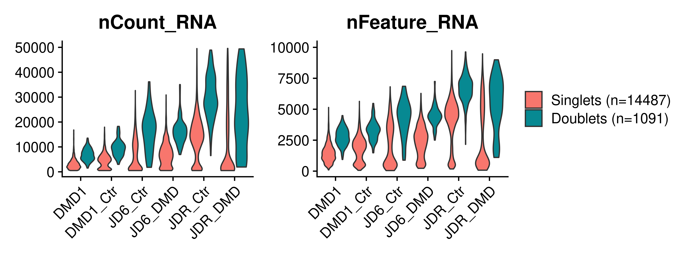
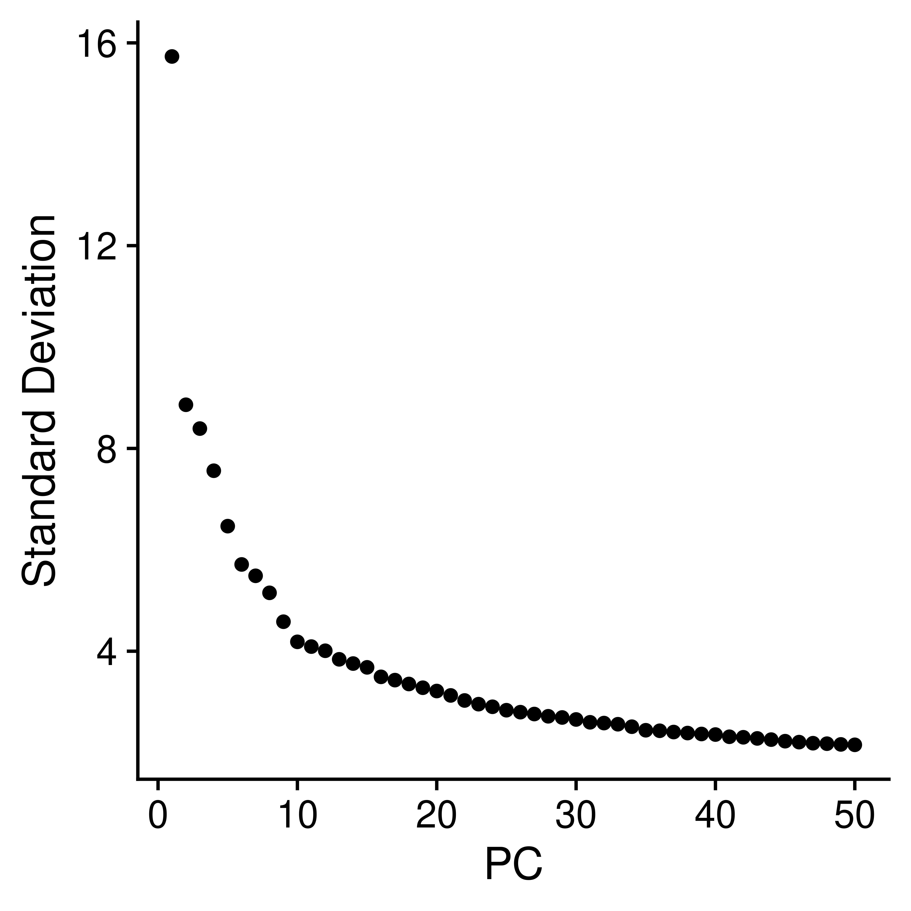
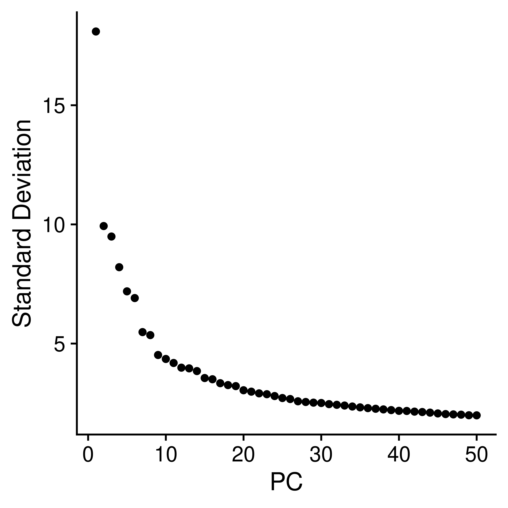

Last updated: 2024-08-27
Checks: 7 0
Knit directory: iPS_organoids/
This reproducible R Markdown analysis was created with workflowr (version 1.7.1). The Checks tab describes the reproducibility checks that were applied when the results were created. The Past versions tab lists the development history.
Great! Since the R Markdown file has been committed to the Git repository, you know the exact version of the code that produced these results.
Great job! The global environment was empty. Objects defined in the global environment can affect the analysis in your R Markdown file in unknown ways. For reproduciblity it’s best to always run the code in an empty environment.
The command set.seed(20240606) was run prior to running
the code in the R Markdown file. Setting a seed ensures that any results
that rely on randomness, e.g. subsampling or permutations, are
reproducible.
Great job! Recording the operating system, R version, and package versions is critical for reproducibility.
Nice! There were no cached chunks for this analysis, so you can be confident that you successfully produced the results during this run.
Great job! Using relative paths to the files within your workflowr project makes it easier to run your code on other machines.
Great! You are using Git for version control. Tracking code development and connecting the code version to the results is critical for reproducibility.
The results in this page were generated with repository version 2aaf1ce. See the Past versions tab to see a history of the changes made to the R Markdown and HTML files.
Note that you need to be careful to ensure that all relevant files for
the analysis have been committed to Git prior to generating the results
(you can use wflow_publish or
wflow_git_commit). workflowr only checks the R Markdown
file, but you know if there are other scripts or data files that it
depends on. Below is the status of the Git repository when the results
were generated:
Ignored files:
Ignored: .Rhistory
Ignored: .Rproj.user/
Ignored: output/Genes_of_interest/
Ignored: output/Test2/
Untracked files:
Untracked: analysis/Genes_of_interest.Rmd
Untracked: code/DE_CDKN1A_temp.Rmd
Untracked: code/QC_backup.Rmd
Untracked: code/QC_integration_annotation_fail.Rmd
Untracked: code/create_CSS.R
Untracked: code/css/
Untracked: data/Cellbender_output/
Untracked: data/Cellranger_output/
Untracked: data/Organoids_metadata.xlsx
Untracked: omnipathr-log/
Untracked: output/CellChat/
Untracked: output/Differential_expression/
Untracked: output/Differential_expression_CDKN1A/
Untracked: output/QC_integration_annotation/
Untracked: output/QC_integration_annotation_Ctr/
Untracked: output/Test/
Unstaged changes:
Modified: analysis/_site.yml
Note that any generated files, e.g. HTML, png, CSS, etc., are not included in this status report because it is ok for generated content to have uncommitted changes.
These are the previous versions of the repository in which changes were
made to the R Markdown
(analysis/QC_integration_annotation.Rmd) and HTML
(docs/QC_integration_annotation.html) files. If you’ve
configured a remote Git repository (see ?wflow_git_remote),
click on the hyperlinks in the table below to view the files as they
were in that past version.
| File | Version | Author | Date | Message |
|---|---|---|---|---|
| Rmd | 2aaf1ce | GinoBonazza | 2024-08-27 | wflow_publish(c("analysis/Differential_expression_CDKN1A.Rmd", |
| html | a9b6926 | GinoBonazza | 2024-07-23 | Build site. |
| html | d1af68a | GinoBonazza | 2024-07-23 | Build site. |
| Rmd | c5bc885 | GinoBonazza | 2024-07-23 | wflow_publish("analysis/QC_integration_annotation.Rmd") |
| html | 0e32b73 | GinoBonazza | 2024-07-23 | Build site. |
| Rmd | ea3cd66 | GinoBonazza | 2024-07-23 | wflow_publish("analysis/QC_integration_annotation.Rmd") |
| html | 97ecd29 | GinoBonazza | 2024-07-23 | Build site. |
| Rmd | 53cb5f8 | GinoBonazza | 2024-07-23 | wflow_publish("analysis/QC_integration_annotation.Rmd") |
| html | a91694e | GinoBonazza | 2024-07-23 | Build site. |
| Rmd | b7c7512 | GinoBonazza | 2024-07-23 | wflow_publish("analysis/QC_integration_annotation.Rmd") |
| html | 60c5232 | GinoBonazza | 2024-06-17 | Build site. |
| Rmd | a069222 | GinoBonazza | 2024-06-17 | wflow_publish("analysis/QC_integration_annotation.Rmd") |
| html | 199e76c | GinoBonazza | 2024-06-15 | Build site. |
| Rmd | 4eb78e0 | GinoBonazza | 2024-06-15 | wflow_publish("analysis/QC_integration_annotation.Rmd") |
Setup
# Get current file name to make folder
current_file <- "QC_integration_annotation"
# Load libraries
library(here)
library(readr)
library(readxl)
library(xlsx)
library(Seurat)
library(DropletUtils)
library(Matrix)
library(scDblFinder)
library(scCustomize)
library(dplyr)
library(ggplot2)
library(magrittr)
library(tidyverse)
library(reshape2)
library(S4Vectors)
library(SingleCellExperiment)
library(pheatmap)
library(png)
library(gridExtra)
library(knitr)
library(scales)
library(RColorBrewer)
library(Matrix.utils)
library(tibble)
library(ggplot2)
library(scater)
library(patchwork)
library(statmod)
library(ArchR)
library(clustree)
library(speckle)
library(ggplot2)
library(scater)
library(gprofiler2)
library(clusterProfiler)
library(org.Hs.eg.db)
library(AnnotationHub)
library(ReactomePA)
library(speckle)
#Output paths
output_dir_data <- here::here("output", current_file)
if (!dir.exists(output_dir_data)) dir.create(output_dir_data)
if (!dir.exists(here::here("docs", "figure"))) dir.create(here::here("docs", "figure"))
output_dir_figs <- here::here("docs", "figure", paste0(current_file, ".Rmd"))
if (!dir.exists(output_dir_figs)) dir.create(output_dir_figs)Quality Control
Load and merge cellranger output
JD6_Ctr <- Read10X_h5(filename = here::here("data", "Cellranger_output", "JD6_Ctr_filtered_feature_bc_matrix.h5"))
JD6_Ctr <- CreateSeuratObject(JD6_Ctr, project = "JD6_Ctr")
JD6_DMD <- Read10X_h5(filename = here::here("data", "Cellranger_output", "JD6_DMD_filtered_feature_bc_matrix.h5"))
JD6_DMD <- CreateSeuratObject(JD6_DMD, project = "JD6_DMD")
DMD1_Ctr <- Read10X_h5(filename = here::here("data", "Cellranger_output", "DMD1_Ctr_filtered_feature_bc_matrix.h5"))
DMD1_Ctr <- CreateSeuratObject(DMD1_Ctr, project = "DMD1_Ctr")
DMD1 <- Read10X_h5(filename = here::here("data", "Cellranger_output", "DMD1_filtered_feature_bc_matrix.h5"))
DMD1 <- CreateSeuratObject(DMD1, project = "DMD1")
JDR_Ctr <- Read10X_h5(filename = here::here("data", "Cellranger_output", "JDR_Ctr_filtered_feature_bc_matrix.h5"))
JDR_Ctr <- CreateSeuratObject(JDR_Ctr, project = "JDR_Ctr")
JDR_DMD <- Read10X_h5(filename = here::here("data", "Cellranger_output", "JDR_DMD_filtered_feature_bc_matrix.h5"))
JDR_DMD <- CreateSeuratObject(JDR_DMD, project = "JDR_DMD")
iPS_preQC <- merge(JD6_Ctr, y = c(JD6_DMD, DMD1_Ctr, DMD1, JDR_Ctr, JDR_DMD),
add.cell.ids = c("JD6_Ctr", "JD6_DMD", "DMD1_Ctr", "DMD1", "JDR_Ctr", "JDR_DMD"))
rm(JD6_Ctr, JD6_DMD, DMD1_Ctr, DMD1, JDR_Ctr, JDR_DMD)Add metadata: percentage of mitochondrial and ribosomal genes, cell line, condition
iPS_preQC[["percent.mt"]] <- PercentageFeatureSet(iPS_preQC, pattern = "^MT-")
iPS_preQC[["percent.rp"]] <- PercentageFeatureSet(iPS_preQC, pattern = "^RP[SL]")
iPS_preQC$Sample <- iPS_preQC$orig.ident
Organoids_metadata <- read_excel(here::here("data", "Organoids_metadata.xlsx"))
add_metadata <- left_join(iPS_preQC[["Sample"]], Organoids_metadata)
row.names(add_metadata) <- row.names(iPS_preQC[[]])
iPS_preQC <- AddMetaData(iPS_preQC, metadata = add_metadata)
rm(add_metadata, Organoids_metadata)
metadata <- unique(subset(iPS_preQC@meta.data, select = c(orig.ident, Sample:length(iPS_preQC@meta.data))))
rownames(metadata) <- metadata$orig.ident
metadata orig.ident Sample Cell_line Condition Library
JD6_Ctr JD6_Ctr JD6_Ctr JD6 Ctr S214
JD6_DMD JD6_DMD JD6_DMD JD6 DMD LIB2
DMD1_Ctr DMD1_Ctr DMD1_Ctr DMD1 Ctr LIB3
DMD1 DMD1 DMD1 DMD1 DMD LIB4
JDR_Ctr JDR_Ctr JDR_Ctr JDR Ctr S215
JDR_DMD JDR_DMD JDR_DMD JDR DMD <NA>Check quality control parameters
p1 <- VlnPlot(iPS_preQC, features = "nCount_RNA", group.by = "Sample", pt.size = 0) + theme(axis.title.x = element_blank()) + NoLegend()
p2 <- VlnPlot(iPS_preQC, features = "nFeature_RNA", group.by = "Sample", pt.size = 0) + theme(axis.title.x = element_blank()) + NoLegend()
p3 <- VlnPlot(iPS_preQC, features = "percent.mt", group.by = "Sample", pt.size = 0) + theme(axis.title.x = element_blank()) + NoLegend()
p4 <- VlnPlot(iPS_preQC, features = "percent.rp", group.by = "Sample", pt.size = 0) + theme(axis.title.x = element_blank()) + NoLegend()
QC_pre_VlnPlots <- p1 + p2 + p3 + p4 + plot_layout(ncol = 2)
QC_pre_VlnPlots
p1 <- VlnPlot(iPS_preQC, features = "nCount_RNA", group.by = "Sample", pt.size = 0, y.max = 10000) + theme(axis.title.x = element_blank()) + NoLegend()
p2 <- VlnPlot(iPS_preQC, features = "nFeature_RNA", group.by = "Sample", pt.size = 0, y.max = 6000) + theme(axis.title.x = element_blank()) + NoLegend()
p3 <- VlnPlot(iPS_preQC, features = "percent.mt", group.by = "Sample", pt.size = 0, y.max = 25) + theme(axis.title.x = element_blank()) + NoLegend()
p4 <- VlnPlot(iPS_preQC, features = "percent.rp", group.by = "Sample", pt.size = 0, y.max = 20) + theme(axis.title.x = element_blank()) + NoLegend()
QC_pre_VlnPlots_zoom <- p1 + p2 + p3 + p4 + plot_layout(ncol = 2)
QC_pre_VlnPlots_zoom
Doublets detection
iPS_preQC_sce <- as.SingleCellExperiment(iPS_preQC)
iPS_preQC_sce <- scDblFinder(iPS_preQC_sce, samples="Sample", clusters = TRUE)
table(iPS_preQC_sce@colData$scDblFinder.class)
singlet doublet
14487 1091 iPS_preQC <- as.Seurat(iPS_preQC_sce, counts = "counts", data = "logcounts")
rm(iPS_preQC_sce)
iPS_preQC@meta.data[iPS_preQC@meta.data$scDblFinder.class %in% "singlet", "scDblFinder.n"] = paste0("Singlets (n=", table(iPS_preQC$scDblFinder.class)[1], ")")
iPS_preQC@meta.data[iPS_preQC@meta.data$scDblFinder.class %in% "doublet", "scDblFinder.n"] = paste0("Doublets (n=", table(iPS_preQC$scDblFinder.class)[2], ")")
iPS_preQC$scDblFinder.n <- factor(x = iPS_preQC$scDblFinder.n, levels = c(rownames(table(iPS_preQC$scDblFinder.n))[2], rownames(table(iPS_preQC$scDblFinder.n))[1])) p1 <- VlnPlot(iPS_preQC, features = c("nCount_RNA"), split.by = "scDblFinder.n", group.by = "Sample", pt.size = 0, y.max = 50000) + theme(axis.title.x = element_blank()) + NoLegend()
p2 <- VlnPlot(iPS_preQC, features = c("nFeature_RNA"), split.by = "scDblFinder.n", group.by = "Sample", pt.size = 0, y.max = 10000) + theme(axis.title.x = element_blank())
QC_pre_Doublets <- p1 + p2 + plot_layout(ncol = 2)
QC_pre_Doublets
saveRDS(iPS_preQC,
here::here(output_dir_data, "iPS_preQC.rds"))Remove doublets
iPS_preQC_no_doublets <- subset(x = iPS_preQC, subset = scDblFinder.class == "singlet")
table(iPS_preQC_no_doublets@meta.data$scDblFinder.class)
singlet doublet
14487 0 rm(iPS_preQC)Check quality control parameters after removing doublets
p1 <- VlnPlot(iPS_preQC_no_doublets, features = "nCount_RNA", group.by = "Sample", pt.size = 0) + theme(axis.title.x = element_blank()) + NoLegend()
p2 <- VlnPlot(iPS_preQC_no_doublets, features = "nFeature_RNA", group.by = "Sample", pt.size = 0) + theme(axis.title.x = element_blank()) + NoLegend()
p3 <- VlnPlot(iPS_preQC_no_doublets, features = "percent.mt", group.by = "Sample", pt.size = 0) + theme(axis.title.x = element_blank()) + NoLegend()
p4 <- VlnPlot(iPS_preQC_no_doublets, features = "percent.rp", group.by = "Sample", pt.size = 0) + theme(axis.title.x = element_blank()) + NoLegend()
QC_pre_no_doublets_VlnPlots <- p1 + p2 + p3 + p4 + plot_layout(ncol = 2)
QC_pre_no_doublets_VlnPlots
p1 <- VlnPlot(iPS_preQC_no_doublets, features = "nCount_RNA", group.by = "Sample", pt.size = 0, y.max = 10000) + theme(axis.title.x = element_blank()) + NoLegend()
p2 <- VlnPlot(iPS_preQC_no_doublets, features = "nFeature_RNA", group.by = "Sample", pt.size = 0, y.max = 6000) + theme(axis.title.x = element_blank()) + NoLegend()
p3 <- VlnPlot(iPS_preQC_no_doublets, features = "percent.mt", group.by = "Sample", pt.size = 0, y.max = 25) + theme(axis.title.x = element_blank()) + NoLegend()
p4 <- VlnPlot(iPS_preQC_no_doublets, features = "percent.rp", group.by = "Sample", pt.size = 0, y.max = 20) + theme(axis.title.x = element_blank()) + NoLegend()
QC_pre_no_doublets_VlnPlots_zoom <- p1 + p2 + p3 + p4 + plot_layout(ncol = 2)
QC_pre_no_doublets_VlnPlots_zoom
Filter based on number of counts, features and percentage of mitochondrial genes
iPS <- subset(iPS_preQC_no_doublets, subset =
nFeature_RNA > 600 &
percent.mt < 20 &
nCount_RNA > 1000)
table(iPS$Sample)
DMD1 DMD1_Ctr JD6_Ctr JD6_DMD JDR_Ctr JDR_DMD
2440 1070 470 1127 3777 654 Check quality control parameters
p1 <- VlnPlot(iPS, features = "nCount_RNA", group.by = "Sample", pt.size = 0) + theme(axis.title.x = element_blank()) + NoLegend()
p2 <- VlnPlot(iPS, features = "nFeature_RNA", group.by = "Sample", pt.size = 0) + theme(axis.title.x = element_blank()) + NoLegend()
p3 <- VlnPlot(iPS, features = "percent.mt", group.by = "Sample", pt.size = 0) + theme(axis.title.x = element_blank()) + NoLegend()
p4 <- VlnPlot(iPS, features = "percent.rp", group.by = "Sample", pt.size = 0) + theme(axis.title.x = element_blank()) + NoLegend()
QC_post_VlnPlots <- p1 + p2 + p3 + p4 + plot_layout(ncol = 2)
QC_post_VlnPlots
p1 <- VlnPlot(iPS, features = "nCount_RNA", group.by = "Sample", pt.size = 0, y.max = 10000) + theme(axis.title.x = element_blank()) + NoLegend()
p2 <- VlnPlot(iPS, features = "nFeature_RNA", group.by = "Sample", pt.size = 0, y.max = 6000) + theme(axis.title.x = element_blank()) + NoLegend()
p3 <- VlnPlot(iPS, features = "percent.mt", group.by = "Sample", pt.size = 0, y.max = 25) + theme(axis.title.x = element_blank()) + NoLegend()
p4 <- VlnPlot(iPS, features = "percent.rp", group.by = "Sample", pt.size = 0, y.max = 20) + theme(axis.title.x = element_blank()) + NoLegend()
QC_post_VlnPlots_zoom <- p1 + p2 + p3 + p4 + plot_layout(ncol = 2)
QC_post_VlnPlots_zoom
p1 <- VlnPlot(iPS, features = "nCount_RNA", group.by = "Sample", pt.size = 0, y.max = 80000) + theme(axis.title.x = element_blank()) + NoLegend()
p2 <- VlnPlot(iPS, features = "nFeature_RNA", group.by = "Sample", pt.size = 0, y.max = 10000) + theme(axis.title.x = element_blank()) + NoLegend()
p3 <- VlnPlot(iPS, features = "percent.mt", group.by = "Sample", pt.size = 0, y.max = 25) + theme(axis.title.x = element_blank()) + NoLegend()
p4 <- VlnPlot(iPS, features = "percent.rp", group.by = "Sample", pt.size = 0, y.max = 60) + theme(axis.title.x = element_blank()) + NoLegend()
QC_post_VlnPlots_zoom <- p1 + p2 + p3 + p4 + plot_layout(ncol = 4)
QC_post_VlnPlots_zoom
| Version | Author | Date |
|---|---|---|
| d1af68a | GinoBonazza | 2024-07-23 |
Integration and clustering
Normalization and scaling using SCTransform.
DefaultAssay(iPS) <- "RNA"
iPS.list <- SplitObject(iPS, split.by = "Sample")
for (i in 1:length(iPS.list)) {
iPS.list[[i]] <- SCTransform(iPS.list[[i]], vst.flavor = "v2", vars.to.regress = c("percent.mt", "percent.rp"))
}PCA without integration
features <- SelectIntegrationFeatures(object.list = iPS.list, nfeatures = 2000)
iPS_not_integrated <- Merge_Seurat_List(iPS.list)
VariableFeatures(iPS_not_integrated) <- features
iPS_not_integrated <- RunPCA(iPS_not_integrated)saveRDS(iPS_not_integrated,
here::here(output_dir_data, "iPS_not_integrated.rds"))iPS_not_integrated <- readRDS(here::here(output_dir_data, "iPS_not_integrated.rds"))ElbowPlot(iPS_not_integrated, ndims = 50)
Clustering without integration
iPS_not_integrated <- RunUMAP(iPS_not_integrated, dims = 1:40)
iPS_not_integrated <- FindNeighbors(iPS_not_integrated, dims = 1:40)
iPS_not_integrated <- FindClusters(iPS_not_integrated, resolution = seq(0.1, 0.8, by=0.1))clustree::clustree(iPS_not_integrated@meta.data[,grep("SCT_snn_res", colnames(iPS_not_integrated@meta.data))],
prefix = "SCT_snn_res.")
DimPlot(iPS_not_integrated, reduction = "umap", shuffle = T,
group.by = c("SCT_snn_res.0.3", "Sample", "Condition", "Cell_line"), ncol = 2)
saveRDS(iPS_not_integrated,
here::here(output_dir_data, "iPS_not_integrated.rds"))Integrate the samples
iPS.list <- PrepSCTIntegration(object.list = iPS.list, anchor.features = features)
iPS.anchors <- FindIntegrationAnchors(object.list = iPS.list, normalization.method = "SCT",
anchor.features = features)
iPS_integrated <- IntegrateData(anchorset = iPS.anchors, normalization.method = "SCT")PCA after integration
iPS_integrated <- RunPCA(iPS_integrated)saveRDS(iPS_integrated,
here::here(output_dir_data, "iPS_integrated_low_quality.rds"))iPS_integrated <- readRDS(here::here(output_dir_data, "iPS_integrated_low_quality.rds"))ElbowPlot(iPS_integrated, ndims = 50)
Clustering after integration
DefaultAssay(iPS_integrated) <- "integrated"
iPS_integrated <- RunUMAP(iPS_integrated, dims = 1:30, reduction = "pca")
iPS_integrated <- FindNeighbors(iPS_integrated, dims = 1:30, reduction = "pca")
iPS_integrated <- FindClusters(iPS_integrated, resolution = seq(0.1, 0.8, by=0.1))clustree::clustree(iPS_integrated@meta.data[,grep("integrated_snn_res", colnames(iPS_integrated@meta.data))],
prefix = "integrated_snn_res.")
DimPlot(iPS_integrated, reduction = "umap", shuffle = T,
group.by = c("integrated_snn_res.0.2", "Sample", "Condition", "Cell_line"), ncol = 2)
saveRDS(iPS_integrated,
here::here(output_dir_data, "iPS_integrated_low_quality.rds"))Find the markers that characterize each cell population
DefaultAssay(iPS_integrated) <- "SCT"
iPS_integrated <- PrepSCTFindMarkers(iPS_integrated)
Idents(iPS_integrated) <- "integrated_snn_res.0.2"
Markers <- FindAllMarkers(iPS_integrated, only.pos = TRUE, min.pct = 0.5, logfc.threshold = 0.5)
write.csv(Markers, here::here(output_dir_data, "iPS_Markers_all_low_quality.csv"))
Markers_top10 <- as.data.frame(Markers %>% group_by(cluster) %>% top_n(n = 10, wt = avg_log2FC))
write.csv(Markers_top10, here::here(output_dir_data, "iPS_Markers_top10_low_quality.csv"))
Markers_top3 <- as.data.frame(Markers %>% group_by(cluster) %>% top_n(n = 3, wt = avg_log2FC))
write.csv(Markers_top3, here::here(output_dir_data, "iPS_Markers_top3_low_quality.csv"))DefaultAssay(iPS_integrated) <- "RNA"
iPS_integrated <- NormalizeData(iPS_integrated)
iPS_integrated <- ScaleData(iPS_integrated)
mapal <- colorRampPalette(RColorBrewer::brewer.pal(9,"RdBu"))(256)
mapal <- rev(mapal[1:256])
Heatmap <- DoHeatmap(iPS_integrated, draw.line = F, features = Markers_top10$gene) +
guides(colour=FALSE) +
scale_fill_gradientn(colours = mapal) +
theme(text = element_text(size = 15), axis.text.y = element_text(size = 8)) +
theme(plot.margin = unit(c(0.1, 0, 0, 0),
"inches"))
Heatmap
Check QC parameters in each cluster
VlnPlot(iPS_integrated, features = c("nCount_RNA", "nFeature_RNA", "percent.mt", "percent.rp"), ncol = 2) + theme(axis.title.x = element_blank())
Remove low quality cells (clusters with low number of features)
iPS_integrated <- subset(iPS_integrated, subset = integrated_snn_res.0.2 != "3" & integrated_snn_res.0.2 != "5")Recluster
DefaultAssay(iPS_integrated) <- "integrated"
iPS_integrated <- RunPCA(iPS_integrated)saveRDS(iPS_integrated,
here::here(output_dir_data, "iPS_integrated.rds"))iPS_integrated <- readRDS(here::here(output_dir_data, "iPS_integrated.rds"))ElbowPlot(iPS_integrated, ndims = 50)
DefaultAssay(iPS_integrated) <- "integrated"
iPS_integrated <- RunUMAP(iPS_integrated, dims = 1:30, reduction = "pca")
iPS_integrated <- FindNeighbors(iPS_integrated, dims = 1:30, reduction = "pca")
iPS_integrated <- FindClusters(iPS_integrated, resolution = seq(0.1, 0.8, by=0.1))clustree::clustree(iPS_integrated@meta.data[,grep("integrated_snn_res", colnames(iPS_integrated@meta.data))],
prefix = "integrated_snn_res.")
DimPlot(iPS_integrated, reduction = "umap", shuffle = T,
group.by = c("integrated_snn_res.0.2", "Sample", "Condition", "Cell_line"), ncol = 2)
Find the markers that characterize each cell population
DefaultAssay(iPS_integrated) <- "SCT"
iPS_integrated <- PrepSCTFindMarkers(iPS_integrated)
Idents(iPS_integrated) <- "integrated_snn_res.0.2"
Markers <- FindAllMarkers(iPS_integrated, only.pos = TRUE, min.pct = 0.5, logfc.threshold = 0.5, recorrect_umi = FALSE)
write.csv(Markers, here::here(output_dir_data, "iPS_Markers_all.csv"))
Markers_top10 <- as.data.frame(Markers %>% group_by(cluster) %>% top_n(n = 10, wt = avg_log2FC))
write.csv(Markers_top10, here::here(output_dir_data, "iPS_Markers_top10.csv"))
Markers_top3 <- as.data.frame(Markers %>% group_by(cluster) %>% top_n(n = 3, wt = avg_log2FC))
write.csv(Markers_top3, here::here(output_dir_data, "iPS_Markers_top3.csv"))Check cell cycle genes
DefaultAssay(iPS_integrated) <- "RNA"
s.genes <- cc.genes$s.genes
g2m.genes <- cc.genes$g2m.genes
iPS_integrated <- CellCycleScoring(iPS_integrated, s.features = s.genes, g2m.features = g2m.genes)
DimPlot(iPS_integrated, reduction = "umap", shuffle = T,
group.by = "Phase")
Cell type annotation
Annotate the clusters based on the characteristic markers
iPS_integrated@meta.data[iPS_integrated@meta.data$integrated_snn_res.0.2 %in% c("0"), "cell_type"] = "Atrial Cardiomyocytes"
iPS_integrated@meta.data[iPS_integrated@meta.data$integrated_snn_res.0.2 %in% c("1"), "cell_type"] = "Ventricular Cardiomyocytes"
iPS_integrated@meta.data[iPS_integrated@meta.data$integrated_snn_res.0.2 %in% c("2"), "cell_type"] = "CDKN1A+ Cardiomyocytes"
iPS_integrated@meta.data[iPS_integrated@meta.data$integrated_snn_res.0.2 %in% c("3"), "cell_type"] = "Fibroblasts"
iPS_integrated@meta.data[iPS_integrated@meta.data$integrated_snn_res.0.2 %in% c("4"), "cell_type"] = "Progenitor cells"
iPS_integrated@meta.data[iPS_integrated@meta.data$integrated_snn_res.0.2 %in% c("5"), "cell_type"] = "Endothelial cells"
iPS_integrated$cell_type <- factor(iPS_integrated$cell_type, levels = c("Atrial Cardiomyocytes",
"Ventricular Cardiomyocytes",
"CDKN1A+ Cardiomyocytes",
"Fibroblasts",
"Progenitor cells",
"Endothelial cells"))
Idents(iPS_integrated) <- iPS_integrated$cell_typeDefaultAssay(iPS_integrated) <- "RNA"
cluster_palette <- c("#24B700","#F8766D", "#D575FE", "#00ACFC", "#EA8331", "#FF65AC")
Heatmap <- DoHeatmap(iPS_integrated, draw.line = F, features = Markers_top10$gene, group.colors = cluster_palette) +
guides(colour=FALSE) +
scale_fill_gradientn(colours = mapal) +
theme(text = element_text(size = 15), axis.text.y = element_text(size = 8)) +
theme(plot.margin = unit(c(0, 0, 0, 0),
"inches"))
Heatmap
p <- DimPlot(iPS_integrated, group.by = "cell_type", reduction = "umap", label = F, cols = cluster_palette) +
NoLegend() +
theme(axis.text=element_text(size=14, face = "bold"), axis.title = element_text(size = 18, face = "bold")) +
theme(plot.title = element_blank())
LabelClusters(p, id = "cell_type", fontface = "bold", size = 5.5, repel = T)
DotPlot(iPS_integrated, assay = "SCT", features = rev(Markers_top3$gene), dot.scale = 5, cluster.idents = FALSE) +
RotatedAxis() +
coord_flip() +
theme(axis.title = element_blank(), axis.text.x = element_text(size = 14), axis.text.y = element_text(size = 13), legend.text = element_text(size = 9), legend.title = element_text(size = 11), plot.margin = unit(c(0, 0, 0, 0.1),
"inches"))
Markers_top5 <- as.data.frame(Markers %>% group_by(cluster) %>% top_n(n = 5, wt = avg_log2FC))
Idents(iPS_integrated) <- factor(iPS_integrated$cell_type, levels = rev(levels(iPS_integrated$cell_type)))
DotPlot(iPS_integrated, assay = "SCT", features = Markers_top5$gene, dot.scale = 5) +
RotatedAxis() +
theme(axis.title = element_blank(), axis.text.x = element_text(size = 12), axis.text.y = element_text(size = 13), legend.text = element_text(size = 9), legend.title = element_text(size = 11), plot.margin = unit(c(0, 0, 0, 0.1),
"inches"))
| Version | Author | Date |
|---|---|---|
| d1af68a | GinoBonazza | 2024-07-23 |
FeaturePlot(iPS_integrated, features = c("MYH6", "MYH7", "CDKN1A", "FN1", "TOP2A", "PECAM1"), ncol = 3)
DefaultAssay(iPS_integrated) <- "SCT"
Idents(iPS_integrated) <- "cell_type"
Markers <- FindAllMarkers(iPS_integrated, only.pos = TRUE, min.pct = 0.5, logfc.threshold = 0.5, recorrect_umi=F)
write.csv(Markers, here::here(output_dir_data, "iPS_Markers_all_cell_type.csv"))
Markers_top10 <- as.data.frame(Markers %>% group_by(cluster) %>% top_n(n = 10, wt = avg_log2FC))
write.csv(Markers_top10, here::here(output_dir_data, "iPS_Markers_top10_cell_type.csv"))
Markers_top3 <- as.data.frame(Markers %>% group_by(cluster) %>% top_n(n = 3, wt = avg_log2FC))
write.csv(Markers_top3, here::here(output_dir_data, "iPS_Markers_top3_cell_type.csv"))df <- Markers[,7:6]
dfsample <- split(df$gene,df$cluster)
length(dfsample)[1] 6dfsample$`Atrial Cardiomyocytes` = bitr(dfsample$`Atrial Cardiomyocytes`, fromType="SYMBOL", toType="ENTREZID", OrgDb="org.Hs.eg.db")
dfsample$`Ventricular Cardiomyocytes` = bitr(dfsample$`Ventricular Cardiomyocytes`, fromType="SYMBOL", toType="ENTREZID", OrgDb="org.Hs.eg.db")
dfsample$`CDKN1A+ Cardiomyocytes` = bitr(dfsample$`CDKN1A+ Cardiomyocytes`, fromType="SYMBOL", toType="ENTREZID", OrgDb="org.Hs.eg.db")
dfsample$Fibroblasts = bitr(dfsample$Fibroblasts, fromType="SYMBOL", toType="ENTREZID", OrgDb="org.Hs.eg.db")
dfsample$`Progenitor cells` = bitr(dfsample$`Progenitor cells`, fromType="SYMBOL", toType="ENTREZID", OrgDb="org.Hs.eg.db")
dfsample$`Endothelial cells` = bitr(dfsample$`Endothelial cells`, fromType="SYMBOL", toType="ENTREZID", OrgDb="org.Hs.eg.db")
#do the same here, a line like below for each cluster
genelist <- list("Atrial Cardiomyocytes" = dfsample$`Atrial Cardiomyocytes`$ENTREZID,
"Ventricular Cardiomyocytes" = dfsample$`Ventricular Cardiomyocytes`$ENTREZID,
"CDKN1A+ Cardiomyocytes" = dfsample$`CDKN1A+ Cardiomyocytes`$ENTREZID,
"Fibroblasts" = dfsample$Fibroblasts$ENTREZID,
"Progenitor cells" = dfsample$`Progenitor cells`$ENTREZID,
"Endothelial cells" = dfsample$`Endothelial cells`$ENTREZID
)
# Calculate gene counts across cells
gene_counts <- rowSums(iPS_integrated@assays$RNA@counts > 0)
# Filter genes to include only those expressed in at least 3 cells
universe_genes <- names(gene_counts[gene_counts >= 3])
# Convert universe gene symbols to Entrez IDs
universe_entrez <- bitr(universe_genes, fromType = "SYMBOL", toType = "ENTREZID", OrgDb = org.Hs.eg.db)$ENTREZIDGO_MF <- compareCluster(geneCluster = genelist, fun = "enrichGO", ont = "ALL", OrgDb = "org.Hs.eg.db", universe = universe_entrez)
GO_MF <- gsfilter(GO_MF, by = 'Count', min = 3)
dotplot(GO_MF, label_format = 35, title = "GO Over-representation analysis") +
theme(axis.text.x = element_text(angle = 45, hjust = 1))
| Version | Author | Date |
|---|---|---|
| d1af68a | GinoBonazza | 2024-07-23 |
GO_MF_simplified <- simplify(
GO_MF,
cutoff = 0.7,
by = "p.adjust",
select_fun = min,
measure = "Wang",
semData = NULL
)
dotplot(GO_MF_simplified, label_format = 40, title = "GO - Molecular Function") +
theme(axis.text.x = element_text(angle = 45, hjust = 1))
| Version | Author | Date |
|---|---|---|
| d1af68a | GinoBonazza | 2024-07-23 |
color_palette_all <- c("#F8766D", "#00C1AB", "#24B700", "#E18A00", "#00ACFC", "#D575FE", "#BE9C00", "#00BE70",
"#8CAB00", "#00BBDA", "#FF65AC", "#8B93FF", "#EA8331")
color_palette <- c("#F8766D", "#24B700", "#00ACFC", "#E18A00", "#D575FE", "#8B93FF")
props <- getTransformedProps(iPS_integrated$cell_type, iPS_integrated$Sample, transform="logit")
par(mar = c(8, 5, 1, 20), xpd = TRUE)
barplot(props$Proportions, legend = FALSE, ylab = "Proportions", col = color_palette,
cex.names = 1.6, las = 2, font.lab = 2, font.axis = 2, cex.axis = 1, cex.lab = 1.6)
legend("topright", inset = c(-0.95, 0.13), legend = rownames(props$Proportions), fill = color_palette, bty = "n", cex = 1.6)
| Version | Author | Date |
|---|---|---|
| d1af68a | GinoBonazza | 2024-07-23 |
color_palette_all <- c("#F8766D", "#00C1AB", "#24B700", "#E18A00", "#00ACFC", "#D575FE", "#BE9C00", "#00BE70",
"#8CAB00", "#00BBDA", "#FF65AC", "#8B93FF", "#EA8331")
color_palette <- c("#F8766D", "#24B700", "#00ACFC", "#E18A00", "#D575FE", "#8B93FF")
props <- getTransformedProps(iPS_integrated$cell_type, iPS_integrated$Condition, transform="logit")
par(mar = c(5, 5, 1, 20), xpd = TRUE)
barplot(props$Proportions, legend = FALSE, ylab = "Proportions", col = color_palette,
cex.names = 1.6, las = 2, font.lab = 2, font.axis = 2, cex.axis = 1, cex.lab = 1.6)
legend("topright", inset = c(-1.28, 0.13), legend = rownames(props$Proportions), fill = color_palette, bty = "n", cex = 1.6)
| Version | Author | Date |
|---|---|---|
| d1af68a | GinoBonazza | 2024-07-23 |
# Extract metadata
metadata <- iPS_integrated@meta.data
# Create a contingency table with cell types as rows and samples as columns
cell_type_sample_table <- table(metadata$cell_type, metadata$Sample)
# Convert the table to a data frame for easier manipulation
cell_type_sample_df <- as.data.frame.matrix(cell_type_sample_table)
# Add the totals per sample (column-wise sum) as the last row
cell_type_sample_df["Total", ] <- colSums(cell_type_sample_df)
# Add the totals per cell type (row-wise sum) as the last column
cell_type_sample_df$Total <- rowSums(cell_type_sample_df)
table_plot <- tableGrob(cell_type_sample_df)
ggsave(here::here(output_dir_figs, "cell_type_sample_table.png"), plot = table_plot, dpi = 600, width = 8, height = 3)
# Include the image in the markdown document
knitr::include_graphics(here::here(output_dir_figs, "cell_type_sample_table.png"), error = FALSE, dpi = 300)
| Version | Author | Date |
|---|---|---|
| 97ecd29 | GinoBonazza | 2024-07-23 |
saveRDS(iPS_integrated,
here::here(output_dir_data, "iPS_integrated.rds"))
sessionInfo()R version 4.3.1 (2023-06-16)
Platform: x86_64-pc-linux-gnu (64-bit)
Running under: Ubuntu 22.04.3 LTS
Matrix products: default
BLAS: /usr/lib/x86_64-linux-gnu/openblas-pthread/libblas.so.3
LAPACK: /usr/lib/x86_64-linux-gnu/openblas-pthread/libopenblasp-r0.3.20.so; LAPACK version 3.10.0
locale:
[1] LC_CTYPE=en_US.UTF-8 LC_NUMERIC=C
[3] LC_TIME=en_US.UTF-8 LC_COLLATE=en_US.UTF-8
[5] LC_MONETARY=en_US.UTF-8 LC_MESSAGES=en_US.UTF-8
[7] LC_PAPER=en_US.UTF-8 LC_NAME=en_US.UTF-8
[9] LC_ADDRESS=en_US.UTF-8 LC_TELEPHONE=en_US.UTF-8
[11] LC_MEASUREMENT=en_US.UTF-8 LC_IDENTIFICATION=en_US.UTF-8
time zone: Etc/UTC
tzcode source: system (glibc)
attached base packages:
[1] grid stats4 stats graphics grDevices utils datasets
[8] methods base
other attached packages:
[1] ReactomePA_1.46.0 AnnotationHub_3.10.0
[3] BiocFileCache_2.10.1 dbplyr_2.4.0
[5] org.Hs.eg.db_3.18.0 AnnotationDbi_1.64.1
[7] clusterProfiler_4.10.1 gprofiler2_0.2.3
[9] speckle_1.2.0 clustree_0.5.1
[11] ggraph_2.2.1 rhdf5_2.46.1
[13] Rcpp_1.0.12 data.table_1.15.2
[15] plyr_1.8.9 gtable_0.3.4
[17] gtools_3.9.5 ArchR_1.0.2
[19] statmod_1.5.0 patchwork_1.2.0
[21] scater_1.30.1 scuttle_1.12.0
[23] Matrix.utils_0.9.7 RColorBrewer_1.1-3
[25] scales_1.3.0 knitr_1.45
[27] gridExtra_2.3 png_0.1-8
[29] pheatmap_1.0.12 reshape2_1.4.4
[31] lubridate_1.9.3 forcats_1.0.0
[33] stringr_1.5.1 purrr_1.0.2
[35] tidyr_1.3.1 tibble_3.2.1
[37] tidyverse_2.0.0 magrittr_2.0.3
[39] ggplot2_3.5.0 dplyr_1.1.4
[41] scCustomize_2.1.2 scDblFinder_1.16.0
[43] Matrix_1.6-5 DropletUtils_1.22.0
[45] SingleCellExperiment_1.24.0 SummarizedExperiment_1.32.0
[47] Biobase_2.62.0 GenomicRanges_1.54.1
[49] GenomeInfoDb_1.38.7 IRanges_2.36.0
[51] S4Vectors_0.40.2 BiocGenerics_0.48.1
[53] MatrixGenerics_1.14.0 matrixStats_1.2.0
[55] SeuratObject_5.0.2 Seurat_4.4.0
[57] xlsx_0.6.5 readxl_1.4.3
[59] readr_2.1.5 here_1.0.1
loaded via a namespace (and not attached):
[1] R.methodsS3_1.8.2 goftest_1.2-3
[3] Biostrings_2.70.2 HDF5Array_1.30.1
[5] vctrs_0.6.5 spatstat.random_3.2-3
[7] digest_0.6.35 shape_1.4.6.1
[9] git2r_0.33.0 ggrepel_0.9.5
[11] deldir_2.0-4 parallelly_1.37.1
[13] MASS_7.3-60.0.1 httpuv_1.6.14
[15] qvalue_2.34.0 withr_3.0.0
[17] ggrastr_1.0.2 ggfun_0.1.4
[19] xfun_0.42 ellipsis_0.3.2
[21] survival_3.5-8 memoise_2.0.1
[23] ggbeeswarm_0.7.2 gson_0.1.0
[25] janitor_2.2.0 systemfonts_1.0.6
[27] ragg_1.2.7 tidytree_0.4.6
[29] zoo_1.8-12 GlobalOptions_0.1.2
[31] pbapply_1.7-2 R.oo_1.26.0
[33] rematch2_2.1.2 KEGGREST_1.42.0
[35] promises_1.2.1 httr_1.4.7
[37] restfulr_0.0.15 globals_0.16.3
[39] fitdistrplus_1.1-11 rhdf5filters_1.14.1
[41] rstudioapi_0.15.0 miniUI_0.1.1.1
[43] generics_0.1.3 DOSE_3.28.2
[45] reactome.db_1.86.2 curl_5.2.1
[47] zlibbioc_1.48.0 ScaledMatrix_1.10.0
[49] polyclip_1.10-6 GenomeInfoDbData_1.2.11
[51] SparseArray_1.2.4 interactiveDisplayBase_1.40.0
[53] xtable_1.8-4 evaluate_0.23
[55] S4Arrays_1.2.1 hms_1.1.3
[57] irlba_2.3.5.1 filelock_1.0.3
[59] colorspace_2.1-0 hdf5r_1.3.10
[61] ROCR_1.0-11 reticulate_1.35.0
[63] spatstat.data_3.0-4 lmtest_0.9-40
[65] snakecase_0.11.1 ggtree_3.10.1
[67] later_1.3.2 viridis_0.6.5
[69] lattice_0.22-5 spatstat.geom_3.2-9
[71] future.apply_1.11.1 shadowtext_0.1.3
[73] scattermore_1.2 XML_3.99-0.16.1
[75] cowplot_1.1.3 RcppAnnoy_0.0.22
[77] pillar_1.9.0 nlme_3.1-164
[79] compiler_4.3.1 beachmat_2.18.1
[81] stringi_1.8.3 tensor_1.5
[83] GenomicAlignments_1.38.2 crayon_1.5.2
[85] abind_1.4-5 BiocIO_1.12.0
[87] gridGraphics_0.5-1 locfit_1.5-9.9
[89] sp_2.1-3 graphlayouts_1.1.1
[91] bit_4.0.5 fastmatch_1.1-4
[93] whisker_0.4.1 textshaping_0.3.7
[95] codetools_0.2-19 BiocSingular_1.18.0
[97] bslib_0.6.1 paletteer_1.6.0
[99] plotly_4.10.4 mime_0.12
[101] splines_4.3.1 circlize_0.4.16
[103] sparseMatrixStats_1.14.0 HDO.db_0.99.1
[105] cellranger_1.1.0 grr_0.9.5
[107] blob_1.2.4 utf8_1.2.4
[109] BiocVersion_3.18.1 fs_1.6.3
[111] checkmate_2.3.1 listenv_0.9.1
[113] DelayedMatrixStats_1.24.0 ggplotify_0.1.2
[115] tzdb_0.4.0 tweenr_2.0.3
[117] pkgconfig_2.0.3 tools_4.3.1
[119] cachem_1.0.8 RSQLite_2.3.5
[121] viridisLite_0.4.2 DBI_1.2.2
[123] graphite_1.48.0 fastmap_1.1.1
[125] rmarkdown_2.26 ica_1.0-3
[127] Rsamtools_2.18.0 sass_0.4.9
[129] BiocManager_1.30.22 ggprism_1.0.4
[131] dotCall64_1.1-1 graph_1.80.0
[133] RANN_2.6.1 farver_2.1.1
[135] scatterpie_0.2.1 tidygraph_1.3.1
[137] yaml_2.3.8 workflowr_1.7.1
[139] rtracklayer_1.62.0 cli_3.6.2
[141] leiden_0.4.3.1 lifecycle_1.0.4
[143] uwot_0.1.16 backports_1.4.1
[145] bluster_1.12.0 BiocParallel_1.36.0
[147] timechange_0.3.0 rjson_0.2.21
[149] ggridges_0.5.6 progressr_0.14.0
[151] ape_5.7-1 parallel_4.3.1
[153] limma_3.58.1 jsonlite_1.8.8
[155] edgeR_4.0.16 bitops_1.0-7
[157] bit64_4.0.5 xgboost_1.7.7.1
[159] Rtsne_0.17 yulab.utils_0.1.4
[161] spatstat.utils_3.0-4 BiocNeighbors_1.20.2
[163] highr_0.10 jquerylib_0.1.4
[165] metapod_1.10.1 GOSemSim_2.28.1
[167] dqrng_0.3.2 R.utils_2.12.3
[169] lazyeval_0.2.2 shiny_1.8.0
[171] enrichplot_1.22.0 htmltools_0.5.8.1
[173] rJava_1.0-11 GO.db_3.18.0
[175] sctransform_0.4.1 rappdirs_0.3.3
[177] glue_1.7.0 spam_2.10-0
[179] XVector_0.42.0 RCurl_1.98-1.14
[181] treeio_1.26.0 rprojroot_2.0.4
[183] scran_1.30.2 igraph_2.0.3
[185] R6_2.5.1 labeling_0.4.3
[187] xlsxjars_0.6.1 cluster_2.1.6
[189] Rhdf5lib_1.24.2 aplot_0.2.2
[191] DelayedArray_0.28.0 tidyselect_1.2.1
[193] vipor_0.4.7 ggforce_0.4.2
[195] future_1.33.1 rsvd_1.0.5
[197] munsell_0.5.0 KernSmooth_2.23-22
[199] htmlwidgets_1.6.4 fgsea_1.28.0
[201] rlang_1.1.4 spatstat.sparse_3.0-3
[203] spatstat.explore_3.2-6 fansi_1.0.6
[205] beeswarm_0.4.0